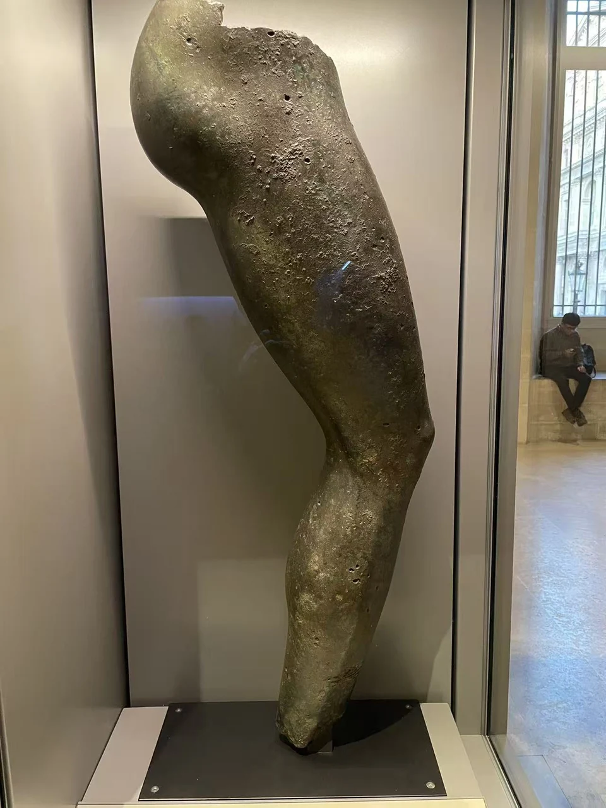
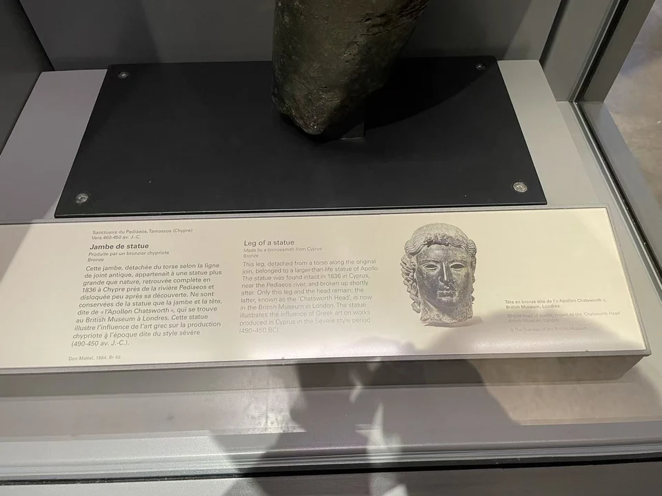

BRONZE / B02
大型青铜像腿部残件（可能属查茨沃思阿波罗）
一条高107厘米的腿，保留了大型铜像的尺度。不齐的断缘，也让观看从身体轮廓转向制作的线索。

- 年代
- 公元前475–450年
- 材料
- 青铜
- 形制
- 雕像残件
- 尺寸
- 107 × 30 × 21厘米
- 收藏与观看
- 卢浮宫 · 巴黎
- 馆藏号
- MNC 1190 / Br 69
一条腿，两个博物馆的线索
卢浮宫将这件残腿归为塞浦路斯制作，约公元前475—450年。目录认为，它可能来自1836年在塔马索斯（Tamassos）附近发现的铜像，而今藏大英博物馆、俗称“查茨沃思阿波罗”的头像也可能属于那件作品。这仍是一种关联判断。 [2]
残腿采用空心铸造。馆方推测原像分腿部、躯干和头部等部分铸成；上端的形状因而不仅是损失，也留下了接合的线索。断裂后的身体在两地被研究，所能重新连接的程度仍取决于各自的证据。 [2]
断面也是认识一座雕像的入口。
现场展签与背景说明

资料与来源
断代、归属与收藏资料
现场展签写约公元前490—450年，卢浮宫现行目录写前475—450年。这里保留两份记录，以现行目录作为主年代。 [2]
基本资料亦参见本页现场展签；照片中的细节与馆方解释分别叙述。